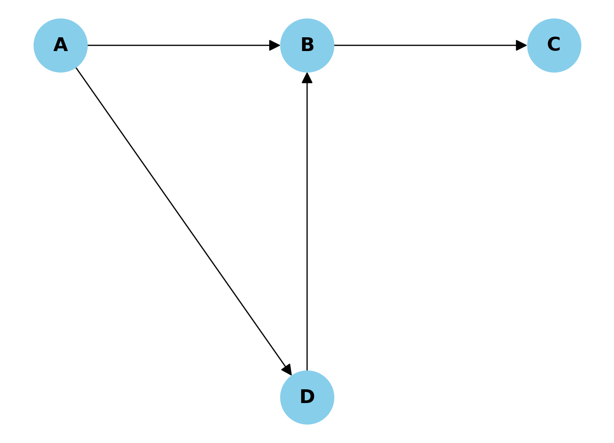
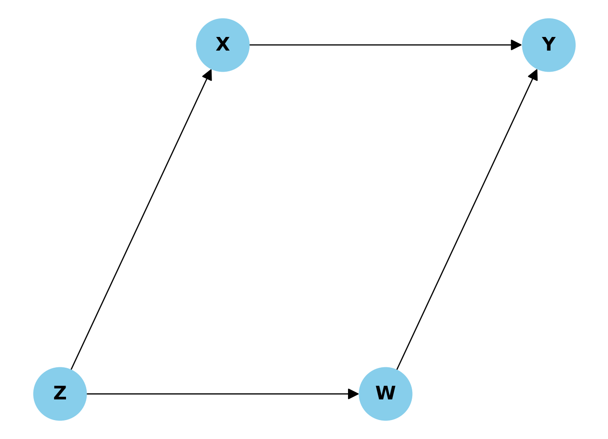
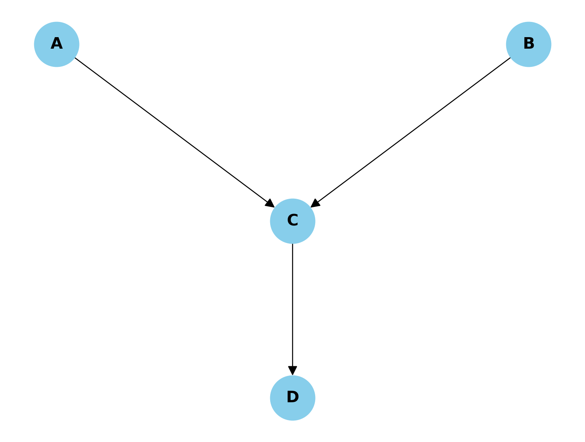
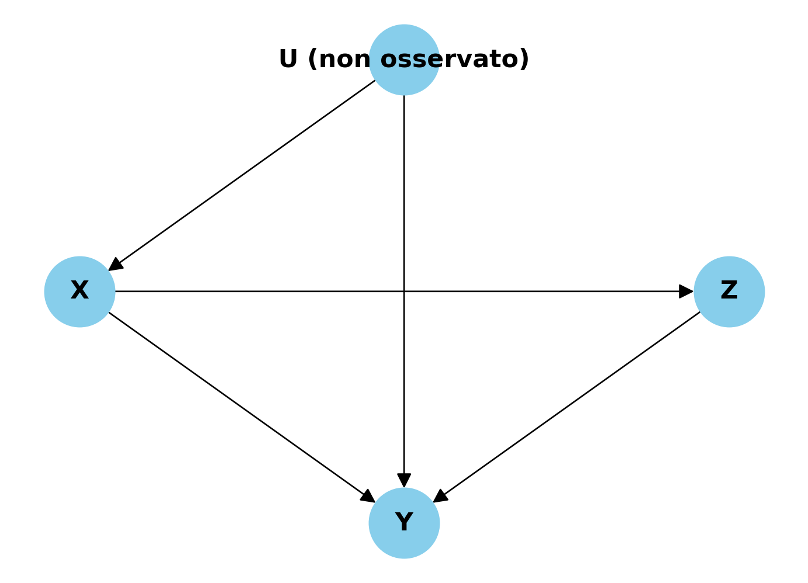
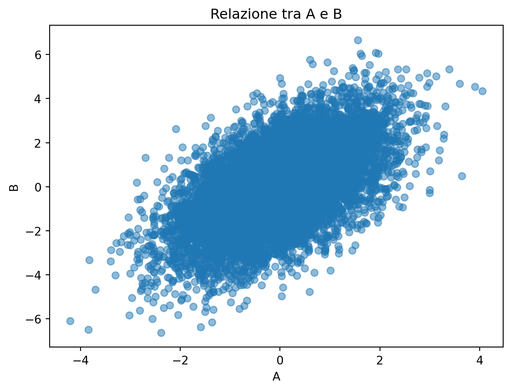
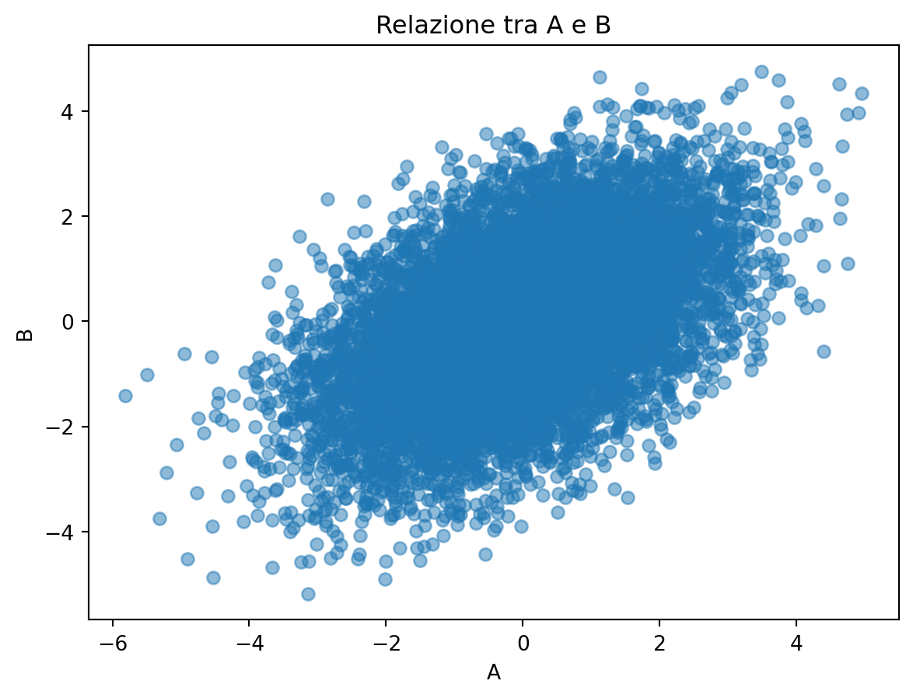
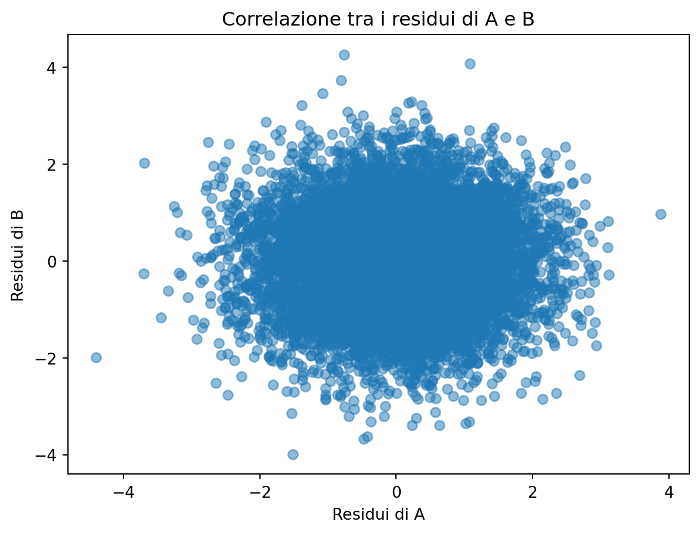
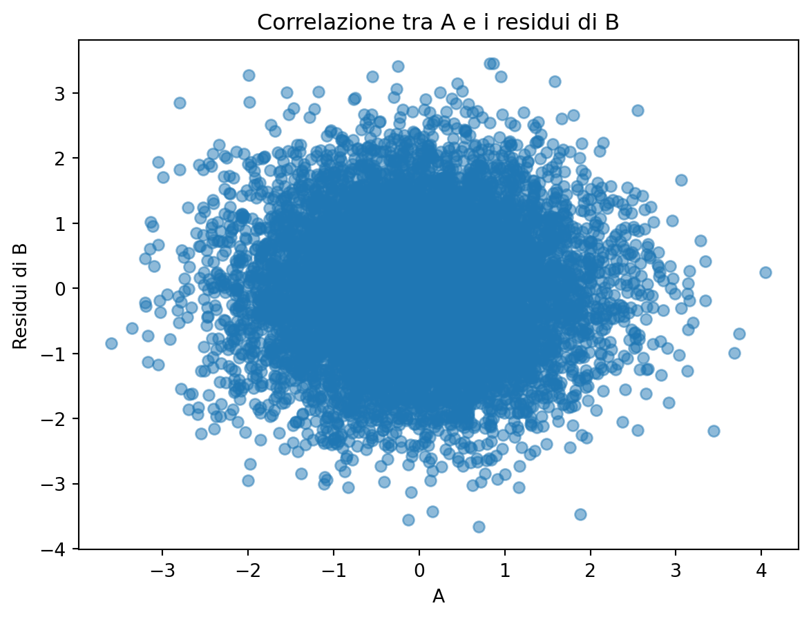
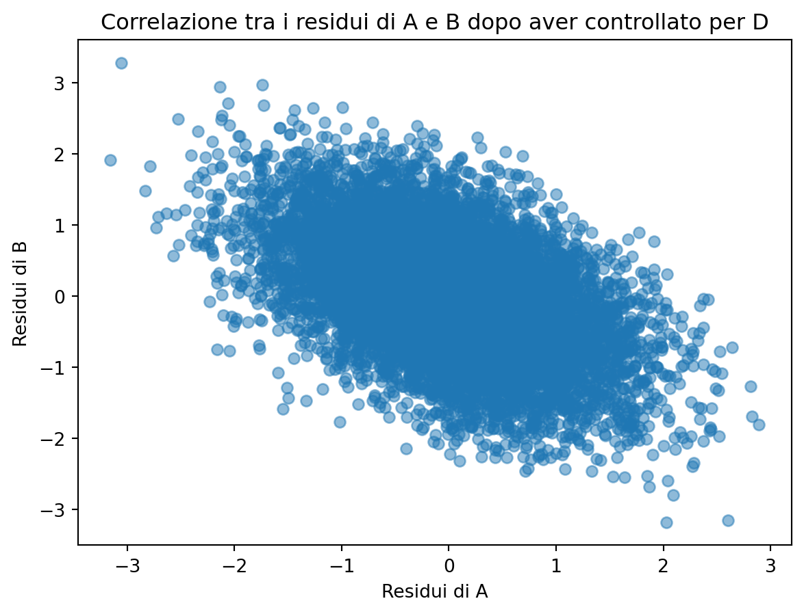

2 Causalità
Esercizio 2.1 Consideriamo il seguente DAG dove A influenza B e D, B influenza C, e D influenza B.
Se vogliamo stimare l’effetto causale di A su C, quale delle seguenti affermazioni è corretta riguardo alla d-separazione e al controllo delle variabili?
Controllare per B è sufficiente e necessario per ottenere una stima non distorta dell’effetto di A su C.
Controllare per D è necessario per bloccare il back-door path tra A e C.
Non è necessario controllare per alcuna variabile, poiché non ci sono confondenti tra A e C.
Controllare sia per B che per D è necessario per ottenere una stima non distorta dell’effetto di A su C.
Controllare per B potrebbe introdurre un bias, poiché B è un collider nel percorso A → B ← D.
Soluzione. Risposta corretta:
- Controllare per B è sufficiente e necessario per ottenere una stima non distorta dell’effetto di A su C.
Spiegazione: In questo DAG, B agisce come un mediatore nella catena causale da A a C (A → B → C). Controllare per B è sufficiente per bloccare il flusso di informazioni lungo questo percorso. Inoltre, B è anche un collider nel percorso A → B ← D, ma questo percorso non crea un back-door path tra A e C, quindi non è necessario controllare per D. Controllare per B è necessario perché altrimenti l’effetto di A su C attraverso B non verrebbe rimosso. Le altre opzioni sono errate perché:
- Non c’è un back-door path da A a C attraverso D.
- B è un mediatore che deve essere controllato.
- Controllare per D non è necessario e potrebbe introdurre bias.
- B non è un collider nel percorso rilevante per l’effetto di A su C.
Esercizio 2.2 Consideriamo il seguente DAG dove X è la variabile di esposizione, Y è l’outcome, e Z e W sono altre variabili nel sistema.

Se vogliamo stimare l’effetto causale di X su Y utilizzando il criterio del back-door, quale delle seguenti affermazioni è corretta?
Non è necessario controllare per alcuna variabile, poiché non ci sono back-door paths tra X e Y.
È necessario controllare solo per Z per bloccare tutti i back-door paths tra X e Y.
È necessario controllare solo per W per bloccare tutti i back-door paths tra X e Y.
È necessario controllare sia per Z che per W per bloccare tutti i back-door paths tra X e Y.
Non è possibile stimare l’effetto causale di X su Y in questo DAG utilizzando il criterio del back-door.
Soluzione. Risposta corretta:
- È necessario controllare solo per Z per bloccare tutti i back-door paths tra X e Y.
Spiegazione: In questo DAG, esiste un back-door path tra X e Y attraverso Z (X ← Z → W → Y). Secondo il criterio del back-door, per ottenere una stima non distorta dell’effetto causale di X su Y, dobbiamo bloccare tutti i back-door paths tra queste variabili.
Controllare per Z è sufficiente per bloccare questo back-door path, poiché Z è una “forchetta” (fork) nel percorso. Una volta che controlliamo per Z, il flusso di informazioni non causali da X a Y attraverso questo percorso viene bloccato.
Le altre opzioni sono errate perché:
- C’è un back-door path che deve essere bloccato.
- Controllare solo per W non è sufficiente, poiché non blocca il flusso di informazioni attraverso Z.
- Non è necessario controllare per W una volta che si è controllato per Z. Controllare per variabili non necessarie può ridurre la precisione della stima.
- È possibile stimare l’effetto causale in questo DAG utilizzando il criterio del back-door, controllando per Z.
Questo esercizio illustra l’importanza di identificare correttamente i back-door paths e di selezionare il set minimo di variabili necessarie per bloccarli quando si applica il criterio del back-door nell’inferenza causale.
Esercizio 2.3 Consideriamo il seguente DAG dove A e B influenzano C indipendentemente, e C influenza D.

Supponiamo di voler studiare la relazione tra A e B. Quale delle seguenti affermazioni è corretta riguardo a questo DAG e al concetto di collider?
A e B sono indipendenti, ma diventano dipendenti se controlliamo per C.
A e B sono dipendenti, ma diventano indipendenti se controlliamo per C.
A e B sono sempre dipendenti, indipendentemente dal fatto che controlliamo o meno per C.
A e B sono sempre indipendenti, indipendentemente dal fatto che controlliamo o meno per C o D.
Controllare per D è necessario per rendere A e B indipendenti.
Soluzione. Risposta corretta:
- A e B sono indipendenti, ma diventano dipendenti se controlliamo per C.
Spiegazione: In questo DAG, C è un collider rispetto ad A e B. Un collider è una variabile che riceve frecce da due o più altre variabili nel grafo. Il comportamento dei collider è particolare e contro-intuitivo nell’analisi causale.
Quando non controlliamo per un collider o per i suoi discendenti:
- Le variabili che influenzano il collider (in questo caso, A e B) sono indipendenti tra loro.
Quando controlliamo per un collider o per i suoi discendenti:
- Introduciamo una dipendenza tra le variabili che influenzano il collider.
Quindi, in questo caso:
- A e B sono originariamente indipendenti.
- Se controlliamo per C (il collider), creiamo una dipendenza tra A e B.
- Anche controllare per D (discendente del collider) creerebbe una dipendenza tra A e B.
Le altre opzioni sono errate perché:
- La direzione della dipendenza è opposta a quella corretta.
- A e B non sono sempre dipendenti; lo diventano solo se controlliamo per C o D.
- A e B diventano dipendenti se controlliamo per C o D.
- Controllare per D non rende A e B indipendenti, ma al contrario crea una dipendenza.
Questo esercizio illustra l’importanza di identificare correttamente i collider in un DAG e di comprendere come il controllo di queste variabili possa influenzare le relazioni tra altre variabili nel sistema.
Esercizio 2.4 Consideriamo il seguente DAG dove X è la variabile di esposizione, Y è l’outcome, U è una variabile non osservata, e Z è una variabile osservata.

Quale delle seguenti affermazioni è corretta riguardo all’applicazione del criterio del back-door per stimare l’effetto causale di X su Y in questo DAG?
Non è possibile applicare il criterio del back-door perché U non è osservata.
Controllare per Z è sufficiente per bloccare tutti i back-door paths tra X e Y.
Controllare per Z non è necessario perché non ci sono back-door paths tra X e Y.
È necessario controllare sia per U che per Z per ottenere una stima non distorta dell’effetto causale di X su Y.
Controllare per Z potrebbe introdurre un bias nella stima dell’effetto causale di X su Y.
Soluzione. Risposta corretta:
- Controllare per Z potrebbe introdurre un bias nella stima dell’effetto causale di X su Y.
Spiegazione: In questo DAG, abbiamo la seguente situazione:
- C’è un back-door path da X a Y attraverso U (X ← U → Y). Questo percorso crea confondimento.
- Z è un collider nel percorso X → Z ← Y.
- U non è osservata, quindi non possiamo controllare direttamente per essa.
Applicando il criterio del back-door:
- Non possiamo bloccare il back-door path X ← U → Y perché U non è osservata.
- Controllare per Z non aiuterebbe a bloccare questo back-door path.
- Anzi, controllare per Z (un collider) aprirebbe un nuovo percorso non causale tra X e Y, introducendo un bias nella stima dell’effetto causale.
Le altre opzioni sono errate perché:
- Anche se U non è osservata, possiamo ancora applicare il criterio del back-door per analizzare la situazione.
- Controllare per Z non è sufficiente e anzi introdurrebbe un bias.
- C’è un back-door path attraverso U.
- Non possiamo controllare per U poiché non è osservata.
Questo esercizio illustra l’importanza di identificare correttamente i back-door paths e i collider in un DAG, e di comprendere come la presenza di variabili non osservate possa complicare l’applicazione del criterio del back-door nell’inferenza causale.
Esercizio 2.5 Considera le relazioni tra le variabili:
- \(A \sim \mathcal{N}(0, 1)\).
- \(M = A + \epsilon_1\), dove \(\epsilon_1 \sim \mathcal{N}(0, 1)\),
- \(B = M + \epsilon_2\), dove \(\epsilon_2 \sim \mathcal{N}(0, 1)\).
- Identifica la struttura causale risultante.
- Crea una simulazione in Python con le precedenti relazioni tra variabili (con \(n\) = 10,000) e crea un diagramma a dispersione per A e B.
- Calcola la correlazione tra A e B.
Soluzione. La struttura causale è quella della mediazione.
import numpy as np
import matplotlib.pyplot as plt
# Numero di punti dati
n = 10000
# A è una variabile casuale distribuita secondo una normale standard
A = np.random.normal(0, 1, n)
# M è una funzione lineare di A con un termine di errore
M = A + np.random.normal(0, 1, n)
# B è una funzione lineare di M con un termine di errore
B = M + np.random.normal(0, 1, n)
# Plot di A contro B
plt.scatter(A, B, alpha=0.5)
plt.xlabel('A')
plt.ylabel('B')
plt.title('Relazione tra A e B')
plt.show()
# Calcolo della correlazione tra A e B
correlation_matrix = np.corrcoef(A, B)
correlation = correlation_matrix[0, 1]
# Stampa il valore della correlazione
print(f"Correlazione tra A e B: {correlation:.4f}")
Correlazione tra A e B: 0.5807Esercizio 2.6 Considera le seguenti relazioni tra le variabili:
- \(C \sim \mathcal{N}(0, 1)\),
- \(A = C + \epsilon_1\), dove \(\epsilon_1 \sim \mathcal{N}(0, 1)\),
- \(B = C + \epsilon_2\), dove \(\epsilon_2 \sim \mathcal{N}(0, 1)\).
- Identifica la struttura causale risultante.
- Crea una simulazione in Python con le precedenti relazioni tra variabili (con \(n\) = 10,000) e crea un diagramma a dispersione per A e B.
- Calcola la correlazione tra A e B.
Soluzione. Se \(A\) e \(B\) condividono un antenato comune \(C\) (biforcazione causale), \(A\) e \(B\) saranno correlati nei dati. Questo fenomeno è chiamato confondimento. La regola si applica anche se l’effetto di C su A e/o su B è mediato da altre variabili.
import numpy as np
import matplotlib.pyplot as plt
# Numero di punti dati
n = 10000
# C è una variabile casuale distribuita secondo una normale standard
C = np.random.normal(0, 1, n)
# A è una funzione lineare di C con un termine di errore
A = C + np.random.normal(0, 1, n)
# B è una funzione lineare di C con un termine di errore
B = C + np.random.normal(0, 1, n)
# Plot di A contro B
plt.scatter(A, B, alpha=0.5)
plt.xlabel('A')
plt.ylabel('B')
plt.title('Relazione tra A e B')
plt.show()
# Calcolo della correlazione tra A e B
correlation_matrix = np.corrcoef(A, B)
correlation = correlation_matrix[0, 1]
# Stampa il valore della correlazione
print(f"Correlazione tra A e B: {correlation:.4f}")
Correlazione tra A e B: 0.4958Esercizio 2.7 Consideriamo la struttura causale del confondimento, in cui una variabile \(C\) influenza entrambe le variabili \(A\) e \(B\):
- \(C \sim \mathcal{N}(0, 1)\) (cioè, \(C\) è distribuita secondo una normale standard),
- \(A = C + \epsilon_1\), dove \(\epsilon_1 \sim \mathcal{N}(0, 1)\) (cioè, \(A\) è una funzione di \(C\) con un termine di errore additivo),
- \(B = C + \epsilon_2\), dove \(\epsilon_2 \sim \mathcal{N}(0, 1)\) (cioè, \(B\) è una funzione di \(C\) con un altro termine di errore additivo).
In questa simulazione Python, si genericno 10,000 osservazioni secondo le relazioni sopra descritte. Successivamente, si calcolino i residui della regressione di \(A\) su \(C\) e di \(B\) su \(C\). Questi residui rappresentano le componenti di \(A\) e \(B\) indipendenti linearmente da \(C\). Infine, calcoli la correlazione tra i residui di \(A\) e \(B\), ovvero la correlazione tra \(A\) e \(B\) dopo aver controllato l’effetto di \(C\). Si interpretino i risultati.
Soluzione.
import numpy as np
import statsmodels.api as sm
import matplotlib.pyplot as plt
# Numero di punti dati
n = 10000
# Generazione delle variabili secondo le specifiche
C = np.random.normal(0, 1, n)
A = C + np.random.normal(0, 1, n)
B = C + np.random.normal(0, 1, n)
# Regressione A ~ C per ottenere i residui
model_A_C = sm.OLS(A, sm.add_constant(C)).fit()
residuals_A = model_A_C.resid
# Regressione B ~ C per ottenere i residui
model_B_C = sm.OLS(B, sm.add_constant(C)).fit()
residuals_B = model_B_C.resid
# Calcolo della correlazione tra i residui di A e B
correlation_residuals = np.corrcoef(residuals_A, residuals_B)[0, 1]
# Stampa del risultato
print(f"Correlazione tra A e B dopo aver controllato per C: {correlation_residuals:.4f}")
# Plot dei residui di A contro i residui di B
plt.scatter(residuals_A, residuals_B, alpha=0.5)
plt.xlabel('Residui di A')
plt.ylabel('Residui di B')
plt.title('Correlazione tra i residui di A e B')
plt.show()Correlazione tra A e B dopo aver controllato per C: 0.0060
Esercizio 2.8 Consideriamo la struttura causale della mediazione, in cui una variabile \(A\) influenza una variabile \(M\), che a sua volta influenza una variabile \(B\):
- \(A \sim \mathcal{N}(0, 1)\) (cioè, \(A\) è distribuita secondo una normale standard),
- \(M = A + \epsilon_1\), dove \(\epsilon_1 \sim \mathcal{N}(0, 1)\) (cioè, \(M\) è una funzione di \(A\) con un termine di errore additivo),
- \(B = M + \epsilon_2\), dove \(\epsilon_2 \sim \mathcal{N}(0, 1)\) (cioè, \(B\) è una funzione di \(M\) con un altro termine di errore additivo).
In questa simulazione Python, genera 10.000 osservazioni secondo le relazioni sopra descritte. Successivamente, calcola i residui della regressione di \(M\) su \(A\) e di \(B\) su \(M\). Questi residui rappresentano le componenti di \(M\) e \(B\) indipendenti linearmente da \(A\) e \(M\), rispettivamente. Infine, calcoleremo la correlazione tra \(A\) e i residui di \(B\), ovvero la correlazione tra \(A\) e \(B\) dopo aver controllato per l’effetto della mediazione attraverso \(M\).
Soluzione.
import numpy as np
import statsmodels.api as sm
import matplotlib.pyplot as plt
# Numero di punti dati
n = 10000
# Generazione delle variabili secondo le specifiche
A = np.random.normal(0, 1, n)
M = A + np.random.normal(0, 1, n)
B = M + np.random.normal(0, 1, n)
# Regressione M ~ A per ottenere i residui
model_M_A = sm.OLS(M, sm.add_constant(A)).fit()
residuals_M = model_M_A.resid
# Regressione B ~ M per ottenere i residui
model_B_M = sm.OLS(B, sm.add_constant(M)).fit()
residuals_B = model_B_M.resid
# Calcolo della correlazione tra A e i residui di B
correlation_residuals = np.corrcoef(A, residuals_B)[0, 1]
# Stampa del risultato
print(f"Correlazione tra A e i residui di B (dopo aver controllato per M): {correlation_residuals:.4f}")
# Plot di A contro i residui di B
plt.scatter(A, residuals_B, alpha=0.5)
plt.xlabel('A')
plt.ylabel('Residui di B')
plt.title('Correlazione tra A e i residui di B')
plt.show()Correlazione tra A e i residui di B (dopo aver controllato per M): -0.0006
Se \(M\) media completamente l’effetto di \(A\) su \(B\), ci aspettiamo che, una volta controllato \(M\), non ci sia alcuna correlazione residua significativa tra \(A\) e \(B\). La correlazione calcolata dovrebbe essere prossima a zero se la mediazione è completa. Se la correlazione è significativamente diversa da zero, potrebbe indicare che esistono effetti diretti di \(A\) su \(B\) non mediati da \(M\) o che esistono altri percorsi attraverso i quali \(A\) influenza \(B\).
Esercizio 2.9 Consideriamo ora la struttura causale di un collider, in cui due variabili indipendenti \(A\) e \(B\) influenzano entrambe una variabile \(M\). In questa configurazione, \(M\) è il collider. Un aspetto fondamentale di questa struttura è che il controllo su \(M\) (il collider) può indurre una correlazione spuria tra \(A\) e \(B\), anche se \(A\) e \(B\) non sono direttamente correlati.
Le relazioni causali sono le seguenti:
- \(A \sim \mathcal{N}(0, 1)\) (cioè, \(A\) è distribuita secondo una normale standard),
- \(B \sim \mathcal{N}(0, 1)\) (cioè, \(B\) è distribuita secondo una normale standard),
- \(C = A + B + \epsilon_1\), dove \(\epsilon_1 \sim \mathcal{N}(0, 1)\) (cioè, \(C\) è una funzione di \(A\) e \(B\) con un termine di errore additivo).
In questa simulazione Python, genera 10,000 osservazioni secondo le relazioni sopra descritte. Successivamente, calcola i residui della regressione di \(C\) su \(A\) e \(B\). Infine, calcola la correlazione tra \(A\) e \(B\) dopo aver controllato per \(C\).
Soluzione.
import numpy as np
import statsmodels.api as sm
import matplotlib.pyplot as plt
# Numero di punti dati
n = 10000
# Generazione delle variabili secondo le specifiche
A = np.random.normal(0, 1, n)
B = np.random.normal(0, 1, n)
D = A + B + np.random.normal(0, 1, n)
# Regressione A ~ D per ottenere i residui
model_A_D = sm.OLS(A, sm.add_constant(D)).fit()
residuals_A = model_A_D.resid
# Regressione B ~ D per ottenere i residui
model_B_D = sm.OLS(B, sm.add_constant(D)).fit()
residuals_B = model_B_D.resid
# Plot dei residui di A contro i residui di B
plt.scatter(residuals_A, residuals_B, alpha=0.5)
plt.xlabel("Residui di A")
plt.ylabel("Residui di B")
plt.title("Correlazione tra i residui di A e B dopo aver controllato per D")
plt.show()
# Calcolo della correlazione tra A e i residui di B
correlation_residuals = np.corrcoef(residuals_A, residuals_B)[0, 1]
# Stampa del risultato
print(
f"Correlazione tra A e i residui di B (dopo aver controllato per D): {correlation_residuals:.4f}"
)
Correlazione tra A e i residui di B (dopo aver controllato per D): -0.5032In una struttura causale di tipo collider, A e B sono indipendenti, ma quando si controlla per D si può generare una correlazione spuria tra A e B. Questo effetto è dovuto alla struttura del collider: controllare per D introduce una dipendenza tra A e B, anche se non esiste un legame diretto tra loro.